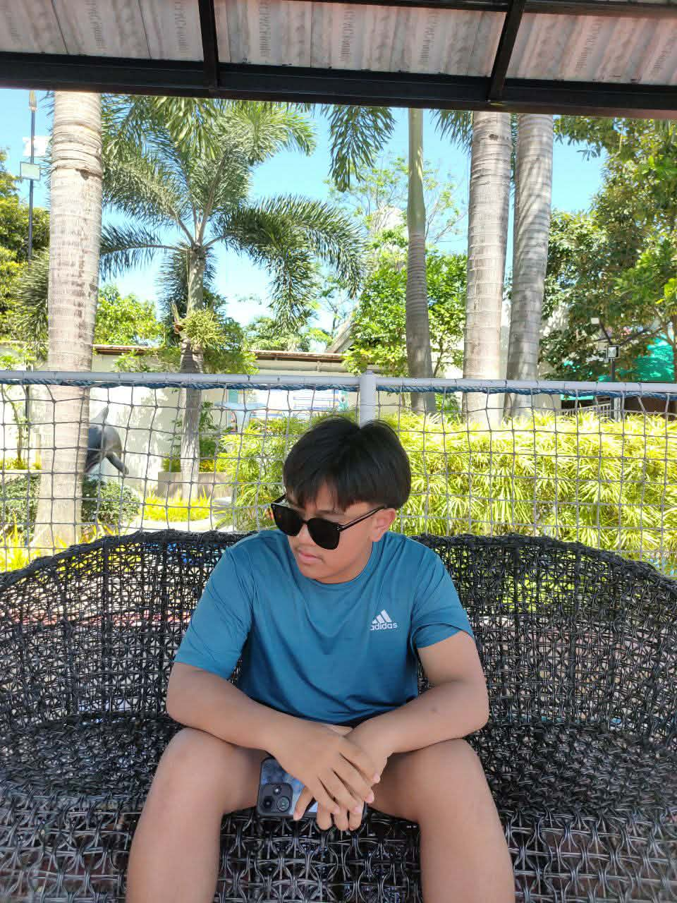
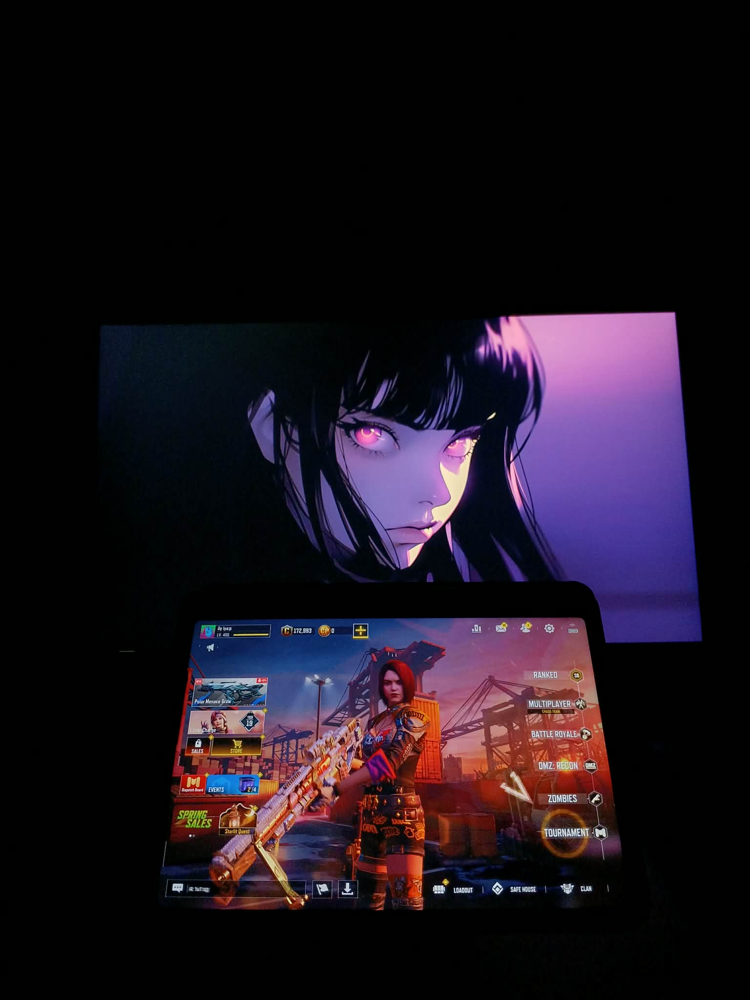
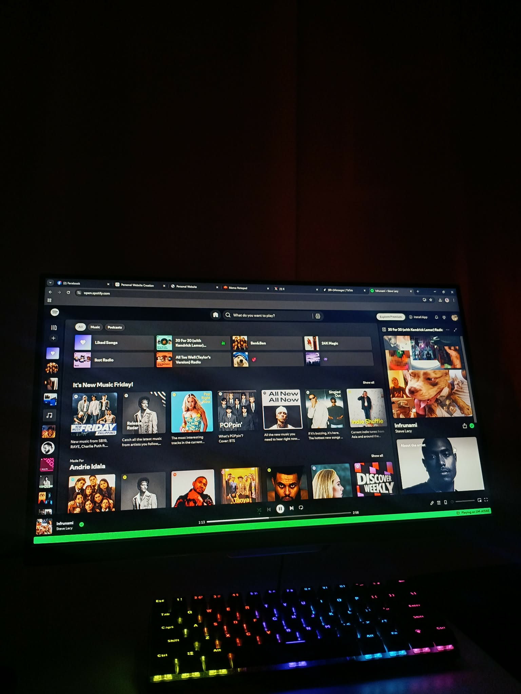
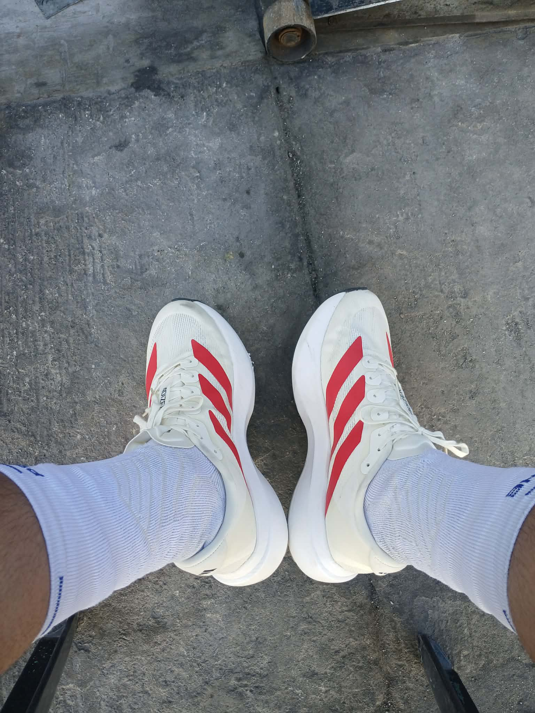
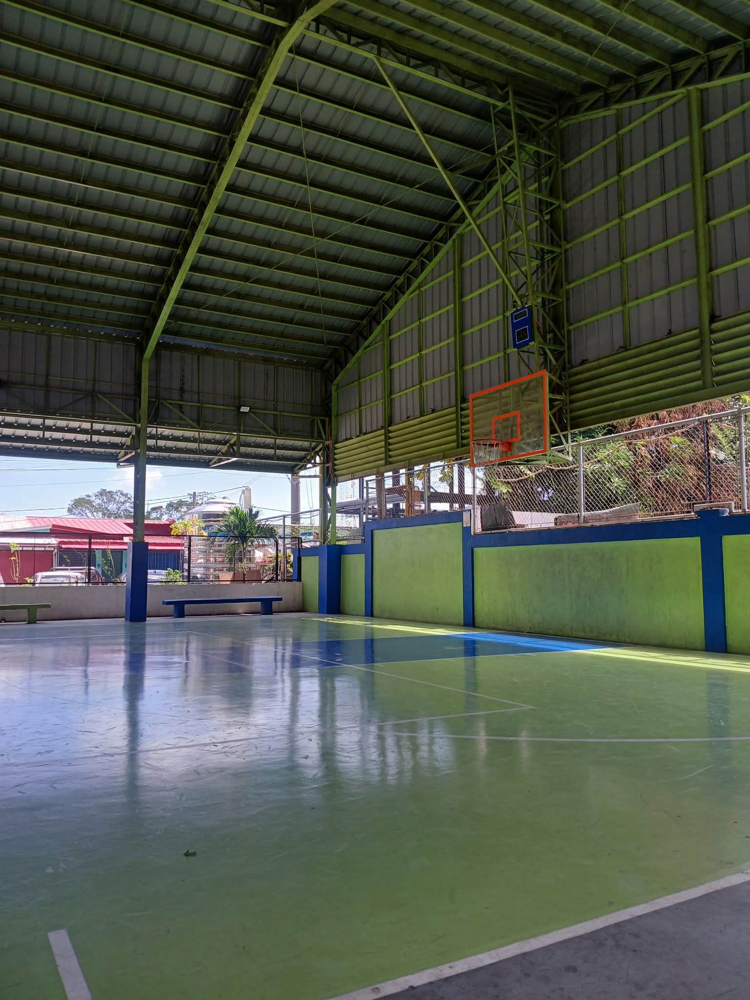
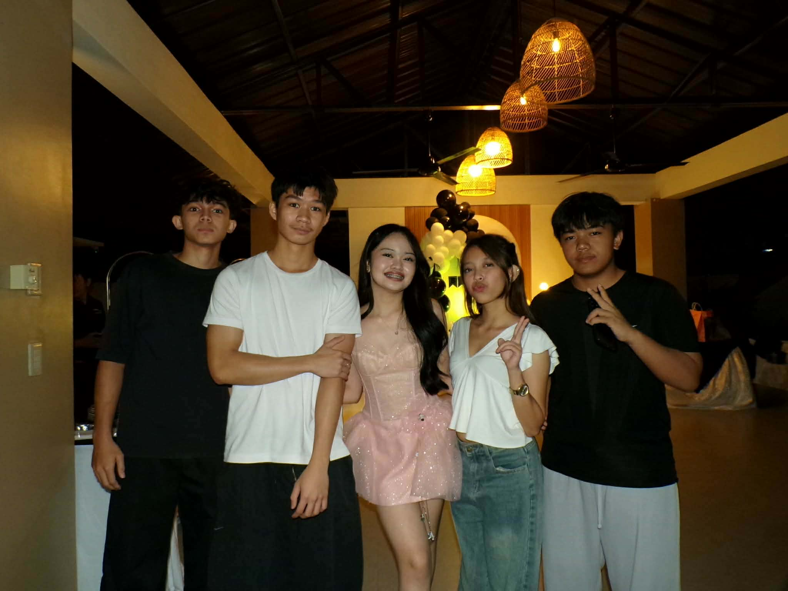

Hello! My name is Andrie Idala. I am a 16-year-old Grade 11 TVL-ICT student. I enjoy learning about computers and creating websites because it is related to what I am currently studying. During my free time, I like playing online games such as CODM, Valorant, and Mobile Legends. When I get bored playing, I spend time hanging out with my friends because they make me happy and help me feel relaxed and comfortable. I also enjoy playing basketball, as well as walking or jogging, because it helps me stay healthy and active. I consider myself a friendly person who likes to joke around, and I always try my best in everything I do.

Gaming

Listening to Music

Walking or Jogging

Playing Basketball

Hanging Out with Friends